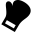

O mnie
Mam na imie Aleksander! Zajmuję się cyberpieczeństwem od 5 lat. W codziennej pracy staram się czerpać radość z tego co robią. Jestem entuzjastą pracy zespołowej i uwielbiam bawić sie cyberbezpieczeństwem.
Doświadczenie zawodowe
- 2017-obecnie: Ministerstwo Obrony Narodowej
Języki
- Angielski - C1
- Polski - ojczysty
Wykształcenie
- 2021-2022: WAT - KiC
Zainteresowania
- 
Box
Uwielbiam uprawiać boks, sprawia mi dużo frajdy.